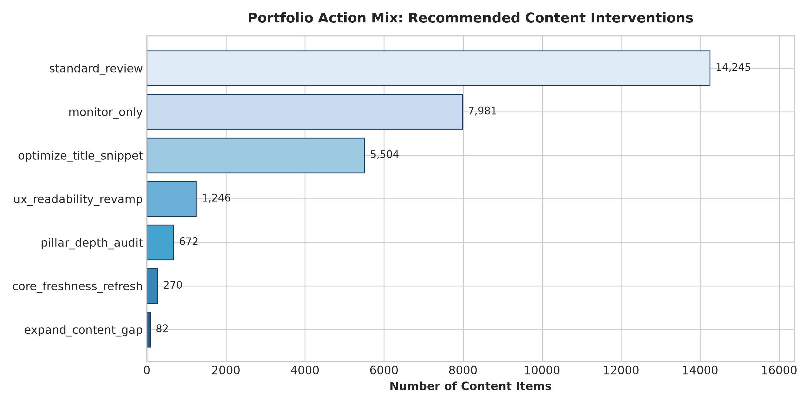
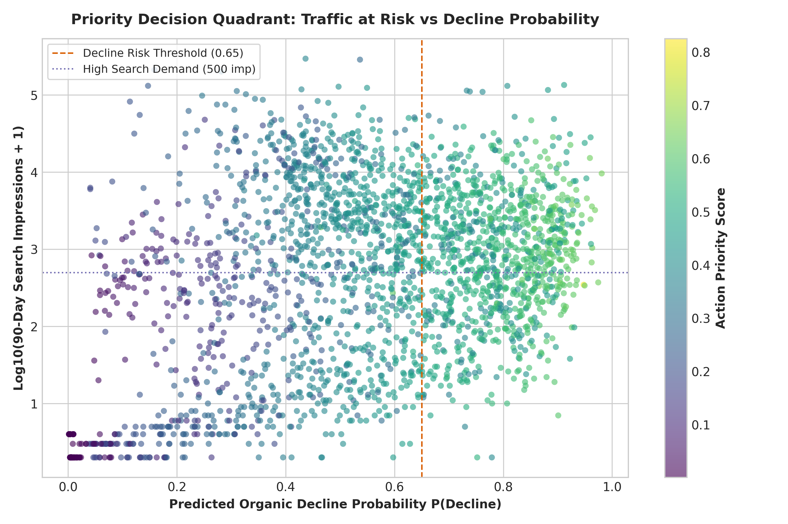
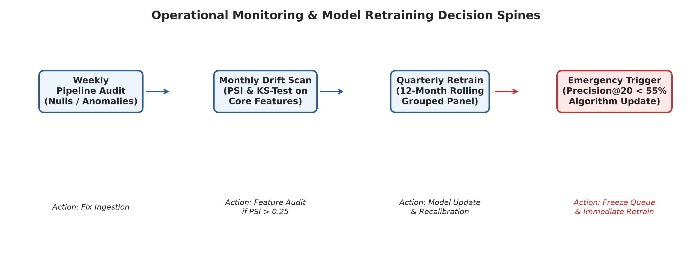

This FlyRank content-refresh case study asks how an editorial team can prioritize a limited review queue without treating every observed decline as equally urgent. I used FlyRank's anonymized 30,000-row teaching slice and excluded identifiers, labels, trend fields, and recent-window fields that would leak the outcome. A histogram gradient boosting model was trained with client-grouped validation, so seven unseen client groups were held out for evaluation. On that held-out slice, the cleaned model reached Precision@50 of 0.84, while the earlier transparent rule baseline reached 0.32 on the same grouped-split setup. The output is a ranked, human-reviewed triage aid for deciding what to inspect first; it does not predict Google’s algorithm or establish that refreshing content causes recovery.
Editorial attention is scarce; evidence should decide the queue.
This is the FlyRank content problem behind the case study: an SEO or content lead has more candidate pages than editorial time in each sprint. The operational question is therefore not “will a page definitely recover?” but “which candidates deserve a human review first, given observed decline risk and traffic at risk?”
Decision supported: prioritize editorial inspection. Human action: verify intent, SERP changes, technical health, facts, and brand fit before any revision. Non-goal: autonomous rewriting, publishing, deletion, or causal claims.
A public-safe teaching slice, not a claim of full-warehouse modeling.
The analysis uses the repository’s anonymized starter dataset: 30,000 content items across 32 pseudonymized client groups, with observed search, engagement, freshness, and content-metadata signals. This paper deliberately does not claim a 79-million-row warehouse model: no local credential or rerunnable warehouse environment was available during final assembly.
Client names, domains, URLs, titles, keywords, raw queries, and credentials are absent. client_id is used only to create grouped splits; content_id is not a feature. The label is derived from observed trend direction, so trend_direction, trend_pct, and last/previous 30-day performance fields are excluded from the cleaned model to avoid label-period leakage.
Hold out whole client groups, then rank—not automate.
I used GroupShuffleSplit with random_state=42: 25 client groups for training and 7 unseen client groups (6,163 items) for testing. The cleaned histogram gradient boosting model used non-identifying, non-label-derived features such as staleness, 90-day visibility, position, content age, and carefully encoded metadata.
The comparison uses Precision@K because the workflow has finite weekly capacity: a useful system should put genuinely declining candidates near the top. The portfolio view then combines model risk with a traffic-value proxy and transparent reason codes. Those recommendations remain suggestions for editorial triage, never execution instructions.
The cleaned model improves top-of-queue purity—but only as a screening tool.
| Approach | Evaluation frame | Precision@50 | Interpretation |
|---|---|---|---|
| Cleaned histogram gradient boosting model | 7 unseen client groups | 0.84 | 42 of the top 50 candidates were declining under the proxy label. |
| Transparent rule baseline | Same grouped-split setup | 0.32 | 16 of the top 50 candidates were declining under the proxy label. |
The result is an observed ranking improvement over this held-out client slice. It is not an estimate of the impact of an editorial refresh. The queue’s action labels are deliberately diagnostic: title/snippet review, readability review, freshness review, depth audit, or monitor-only.



What this work does not show is as important as what it does.
Outcome and time limits
The target is a contemporaneous decline proxy, not a future causal outcome. A single grouped split does not replace time-forward validation, and seasonal behavior, algorithm updates, and client mix can change the feature–outcome relationship.
Evidence boundary
The final paper is based on the committed anonymized teaching slice, not a full 79M-row rerun. That makes the work reproducible from this repository, but constrains its external generalization.
No-go list
- No autonomous rewriting or publishing.
- No automated deletion or bulk metadata changes.
- No intervention during a migration or major technical incident.
- No claim that a recommendation will restore ranking, traffic, or conversions.
Use the queue as a review agenda.
- Start with high-value, high-risk candidates. Confirm search intent and present-day SERP context before allocating editorial work.
- Match the intervention to the diagnostic. Use title/snippet review for CTR opportunity, readability work for engagement friction, and freshness/depth review only after manual evidence supports it.
- Deprioritize low-demand long-tail items. Monitoring is an explicit choice, not a failure to act.
- Record realized outcomes. Use editor-reviewed outcomes to evaluate whether the ranked queue remains useful after deployment conditions change.
Everything needed to inspect the work is in the repository.
The analysis trail is preserved in ML-08 modeling, ML-09 validation audit, and ML-10 action playbook. The reference pipeline can be run with pip install -r requirements.txt and python scripts/run_all.py; the capstone notebook records the assignment-level narrative. The model split uses seed 42.
Verification status: the source notebooks contain saved execution receipts from the configured local Python environment. Rerun the capstone and evidence notebooks after any code or data change, then confirm the metrics and figures still match this page.
Built with a public-safety boundary.
Built on the FlyRank ML Internship dataset. The data and narrative are presented as anonymized, observed, and decision-support evidence. No raw client data or private search queries are included.